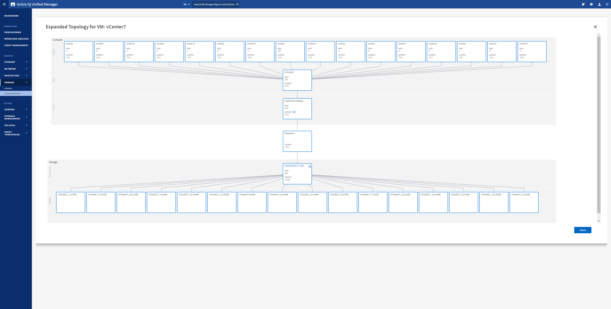

Microsoft SQL Server
Microsoft SQL Server
Quality of service (QoS)
 Suggest changes
Suggest changes
Systems running ONTAP software can use the ONTAP storage QoS feature to limit throughput in MBps and/or I/Os per second (IOPS) for different storage objects such as files, LUNs, volumes, or entire SVMs.
Throughput limits are useful in controlling unknown or test workloads before deployment to make sure they don't affect other workloads. They can also be used to constrain a bully workload after it is identified. Minimum levels of service based on IOPS are also supported to provide consistent performance for SAN objects in ONTAP 9.2 and for NAS objects in ONTAP 9.3.
With an NFS datastore, a QoS policy can be applied to the entire FlexVol volume or individual VMDK files within it. With VMFS datastores using ONTAP LUNs, the QoS policies can be applied to the FlexVol volume that contains the LUNs or individual LUNs, but not individual VMDK files because ONTAP has no awareness of the VMFS file system. When using vVols, minimum and/or maximum QoS can be set on individual VMs using the storage capability profile and VM storage policy.
The QoS maximum throughput limit on an object can be set in MBps and/or IOPS. If both are used, the first limit reached is enforced by ONTAP. A workload can contain multiple objects, and a QoS policy can be applied to one or more workloads. When a policy is applied to multiple workloads, the workloads share the total limit of the policy. Nested objects are not supported (for example, files within a volume cannot each have their own policy). QoS minimums can only be set in IOPS.
The following tools are currently available for managing ONTAP QoS policies and applying them to objects:
-
ONTAP CLI
-
ONTAP System Manager
-
OnCommand Workflow Automation
-
Active IQ Unified Manager
-
NetApp PowerShell Toolkit for ONTAP
-
ONTAP tools for VMware vSphere VASA Provider
To assign a QoS policy to a VMDK on NFS, note the following guidelines:
-
The policy must be applied to the
vmname- flat.vmdkthat contains the actual virtual disk image, not thevmname.vmdk(virtual disk descriptor file) orvmname.vmx(VM descriptor file). -
Do not apply policies to other VM files such as virtual swap files (
vmname.vswp). -
When using the vSphere web client to find file paths (Datastore > Files), be aware that it combines the information of the
- flat.vmdkand. vmdkand simply shows one file with the name of the. vmdkbut the size of the- flat.vmdk. Add-flatinto the file name to get the correct path.
To assign a QoS policy to a LUN, including VMFS and RDM, the ONTAP SVM (displayed as Vserver), LUN path, and serial number can be obtained from the Storage Systems menu on the ONTAP tools for VMware vSphere home page. Select the storage system (SVM), and then Related Objects > SAN. Use this approach when specifying QoS using one of the ONTAP tools.
Maximum and minimum QoS can be easily assigned to a vVol-based VM with ONTAP tools for VMware vSphere or Virtual Storage Console 7.1 and later. When creating the storage capability profile for the vVol container, specify a max and/or min IOPS value under the performance capability and then reference this SCP with the VM's storage policy. Use this policy when creating the VM or apply the policy to an existing VM.
FlexGroup datastores offer enhanced QoS capabilities when using ONTAP tools for VMware vSphere 9.8 and later. You can easily set QoS on all VMs in a datastore or on specific VMs. See the FlexGroup section of this report for more information.
ONTAP QoS and VMware SIOC
ONTAP QoS and VMware vSphere Storage I/O Control (SIOC) are complementary technologies that vSphere and storage administrators can use together to manage performance of vSphere VMs hosted on systems running ONTAP software. Each tool has its own strengths, as shown in the following table. Because of the different scopes of VMware vCenter and ONTAP, some objects can be seen and managed by one system and not the other.
| Property | ONTAP QoS | VMware SIOC |
|---|---|---|
When active |
Policy is always active |
Active when contention exists (datastore latency over threshold) |
Type of units |
IOPS, MBps |
IOPS, shares |
vCenter or application scope |
Multiple vCenter environments, other hypervisors and applications |
Single vCenter server |
Set QoS on VM? |
VMDK on NFS only |
VMDK on NFS or VMFS |
Set QoS on LUN (RDM)? |
Yes |
No |
Set QoS on LUN (VMFS)? |
Yes |
No |
Set QoS on volume (NFS datastore)? |
Yes |
No |
Set QoS on SVM (tenant)? |
Yes |
No |
Policy based approach? |
Yes; can be shared by all workloads in the policy or applied in full to each workload in the policy. |
Yes, with vSphere 6.5 and later. |
License required |
Included with ONTAP |
Enterprise Plus |
VMware Storage Distributed Resource Scheduler
VMware Storage Distributed Resource Scheduler (SDRS) is a vSphere feature that places VMs on storage based on the current I/O latency and space usage. It then moves the VM or VMDKs nondisruptively between the datastores in a datastore cluster (also referred to as a pod), selecting the best datastore in which to place the VM or VMDKs in the datastore cluster. A datastore cluster is a collection of similar datastores that are aggregated into a single unit of consumption from the vSphere administrator's perspective.
When using SDRS with the NetApp ONTAP tools for VMware vSphere, you must first create a datastore with the plug-in, use vCenter to create the datastore cluster, and then add the datastore to it. After the datastore cluster is created, additional datastores can be added to the datastore cluster directly from the provisioning wizard on the Details page.
Other ONTAP best practices for SDRS include the following:
-
All datastores in the cluster should use the same type of storage (such as SAS, SATA, or SSD), be either all VMFS or NFS datastores, and have the same replication and protection settings.
-
Consider using SDRS in default (manual) mode. This approach allows you to review the recommendations and decide whether to apply them or not. Be aware of these effects of VMDK migrations:
-
When SDRS moves VMDKs between datastores, any space savings from ONTAP cloning or deduplication are lost. You can rerun deduplication to regain these savings.
-
After SDRS moves VMDKs, NetApp recommends recreating the snapshots at the source datastore because space is otherwise locked by the VM that was moved.
-
Moving VMDKs between datastores on the same aggregate has little benefit, and SDRS does not have visibility into other workloads that might share the aggregate.
-
Storage policy based management and vVols
VMware vSphere APIs for Storage Awareness (VASA) make it easy for a storage administrator to configure datastores with well-defined capabilities and let the VM administrator use those whenever needed to provision VMs without having to interact with each other. It's worth taking a look at this approach to see how it can streamline your virtualization storage operations and avoid a lot of trivial work.
Prior to VASA, VM administrators could define VM storage policies, but they had to work with the storage administrator to identify appropriate datastores, often by using documentation or naming conventions. With VASA, the storage administrator can define a range of storage capabilities, including performance, tiering, encryption, and replication. A set of capabilities for a volume or a set of volumes is called a storage capability profile (SCP).
The SCP supports minimum and/or maximum QoS for a VM's data vVols. Minimum QoS is supported only on AFF systems. ONTAP tools for VMware vSphere includes a dashboard that displays VM granular performance and logical capacity for vVols on ONTAP systems.
The following figure depicts ONTAP tools for VMware vSphere 9.8 vVols dashboard.

After the storage capability profile is defined, it can be used to provision VMs using the storage policy that identifies its requirements. The mapping between the VM storage policy and the datastore storage capability profile allows vCenter to display a list of compatible datastores for selection. This approach is known as storage policy based management.
VASA provides the technology to query storage and return a set of storage capabilities to vCenter. VASA vendor providers supply the translation between the storage system APIs and constructs and the VMware APIs that are understood by vCenter. NetApp's VASA Provider for ONTAP is offered as part of the ONTAP tools for VMware vSphere appliance VM, and the vCenter plug-in provides the interface to provision and manage vVol datastores, as well as the ability to define storage capability profiles (SCPs).
ONTAP supports both VMFS and NFS vVol datastores. Using vVols with SAN datastores brings some of the benefits of NFS such as VM-level granularity. Here are some best practices to consider, and you can find additional information in TR-4400:
-
A vVol datastore can consist of multiple FlexVol volumes on multiple cluster nodes. The simplest approach is a single datastore, even when the volumes have different capabilities. SPBM makes sure that a compatible volume is used for the VM. However, the volumes must all be part of a single ONTAP SVM and accessed using a single protocol. One LIF per node for each protocol is sufficient. Avoid using multiple ONTAP releases within a single vVol datastore because the storage capabilities might vary across releases.
-
Use the ONTAP tools for VMware vSphere plug-in to create and manage vVol datastores. In addition to managing the datastore and its profile, it automatically creates a protocol endpoint to access the vVols if needed. If LUNs are used, note that LUN PEs are mapped using LUN IDs 300 and higher. Verify that the ESXi host advanced system setting
Disk.MaxLUNallows a LUN ID number that is higher than 300 (the default is 1,024). Do this step by selecting the ESXi host in vCenter, then the Configure tab, and findDisk.MaxLUNin the list of Advanced System Settings. -
Do not install or migrate VASA Provider, vCenter Server (appliance or Windows based), or ONTAP tools for VMware vSphere itself onto a vVols datastore, because they are then mutually dependent, limiting your ability to manage them in the event of a power outage or other data center disruption.
-
Back up the VASA Provider VM regularly. At a minimum, create hourly snapshots of the traditional datastore that contains VASA Provider. For more about protecting and recovering the VASA Provider, see this KB article.
The following figure shows vVols components.

Cloud migration and backup
Another ONTAP strength is broad support for the hybrid cloud, merging systems in your on-premises private cloud with public cloud capabilities. Here are some NetApp cloud solutions that can be used in conjunction with vSphere:
-
Cloud Volumes. NetApp Cloud Volumes Service for Amazon Web Services or Google Cloud Platform and Azure NetApp Files for ANF provide high-performance, multi-protocol managed storage services in the leading public cloud environments. They can be used directly by VMware Cloud VM guests.
-
Cloud Volumes ONTAP. NetApp Cloud Volumes ONTAP data management software delivers control, protection, flexibility, and efficiency to your data on your choice of cloud. Cloud Volumes ONTAP is cloud-native data management software built on NetApp ONTAP storage software. Use together with Cloud Manager to deploy and manage Cloud Volumes ONTAP instances together with your on-premises ONTAP systems. Take advantage of advanced NAS and iSCSI SAN capabilities together with unified data management, including snapshots and SnapMirror replication.
-
Cloud Services. Use Cloud Backup Service or SnapMirror Cloud to protect data from on-premises systems using public cloud storage. Cloud Sync helps migrate and keep your data in sync across NAS, object stores, and Cloud Volumes Service storage.
-
FabricPool. FabricPool offers quick and easy tiering for ONTAP data. Cold blocks can be migrated to an object store in either public clouds or a private StorageGRID object store and are automatically recalled when the ONTAP data is accessed again. Or use the object tier as a third level of protection for data that is already managed by SnapVault. This approach can allow you to store more snapshots of your VMs on primary and/or secondary ONTAP storage systems.
-
ONTAP Select. Use NetApp software-defined storage to extend your private cloud across the Internet to remote facilities and offices, where you can use ONTAP Select to support block and file services as well as the same vSphere data management capabilities you have in your enterprise data center.
When designing your VM-based applications, consider future cloud mobility. For example, rather than placing application and data files together use a separate LUN or NFS export for the data. This allows you to migrate the VM and data separately to cloud services.
Encryption for vSphere data
Today, there are increasing demands to protect data at rest through encryption. Although the initial focus was on financial and healthcare information, there is growing interest in protecting all information, whether it's stored in files, databases, or other data types.
Systems running ONTAP software make it easy to protect any data with at-rest encryption. NetApp Storage Encryption (NSE) uses self-encrypting disk drives with ONTAP to protect SAN and NAS data. NetApp also offers NetApp Volume Encryption and NetApp Aggregate Encryption as a simple, software-based approach to encrypt volumes on any disk drives. This software encryption doesn't require special disk drives or external key managers and is available to ONTAP customers at no additional cost. You can upgrade and start using it without any disruption to your clients or applications, and they are validated to the FIPS 140-2 level 1 standard, including the onboard key manager.
There are several approaches for protecting the data of virtualized applications running on VMware vSphere. One approach is to protect the data with software inside the VM at the guest OS level. Newer hypervisors such as vSphere 6.5 now support encryption at the VM level as another alternative. However, NetApp software encryption is simple and easy and has these benefits:
-
No effect on the virtual server CPU. Some virtual server environments need every available CPU cycle for their applications, yet tests have shown up to 5x CPU resources are needed with hypervisor-level encryption. Even if the encryption software supports Intel's AES-NI instruction set to offload encryption workload (as NetApp software encryption does), this approach might not be feasible due to the requirement for new CPUs that are not compatible with older servers.
-
Onboard key manager included. NetApp software encryption includes an onboard key manager at no additional cost, which makes it easy to get started without high-availability key management servers that are complex to purchase and use.
-
No effect on storage efficiency. Storage efficiency techniques such as deduplication and compression are widely used today and are key to using flash disk media cost-effectively. However, encrypted data cannot typically be deduplicated or compressed. NetApp hardware and storage encryption operate at a lower level and allow full use of industry-leading NetApp storage efficiency features, unlike other approaches.
-
Easy datastore granular encryption. With NetApp Volume Encryption, each volume gets its own AES 256-bit key. If you need to change it, you can do so with a single command. This approach is great if you have multiple tenants or need to prove independent encryption for different departments or apps. This encryption is managed at the datastore level, which is a lot easier than managing individual VMs.
It's simple to get started with software encryption. After the license is installed, simply configure the onboard key manager by specifying a passphrase and then either create a new volume or do a storage-side volume move to enable encryption. NetApp is working to add more integrated support for encryption capabilities in future releases of its VMware tools.
Active IQ Unified Manager
Active IQ Unified Manager provides visibility into the VMs in your virtual infrastructure and enables monitoring and troubleshooting storage and performance issues in your virtual environment.
A typical virtual infrastructure deployment on ONTAP has various components that are spread across compute, network, and storage layers. Any performance lag in a VM application might occur due to a combination of latencies faced by the various components at the respective layers.
The following screenshot shows the Active IQ Unified Manager Virtual Machines view.

Unified Manager presents the underlying sub-system of a virtual environment in a topological view for determining whether a latency issue has occurred in the compute node, network, or storage. The view also highlights the specific object that causes the performance lag for taking remedial steps and addressing the underlying issue.
The following screenshot shows the AIQUM expanded topology.
